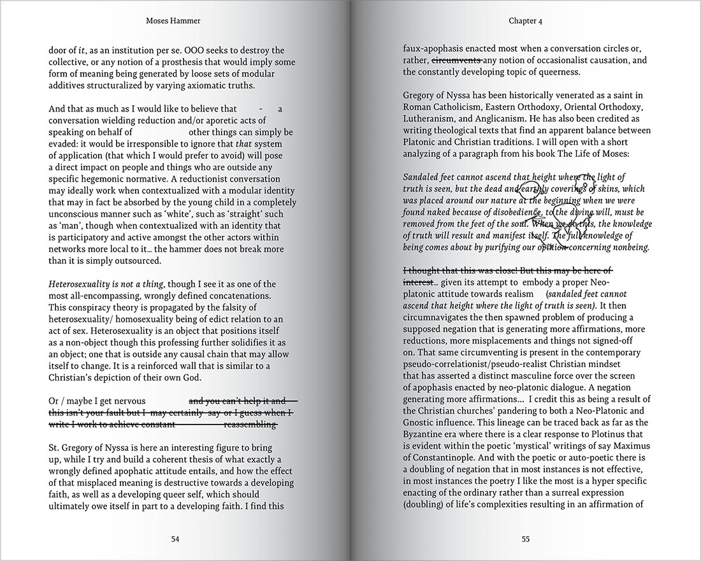
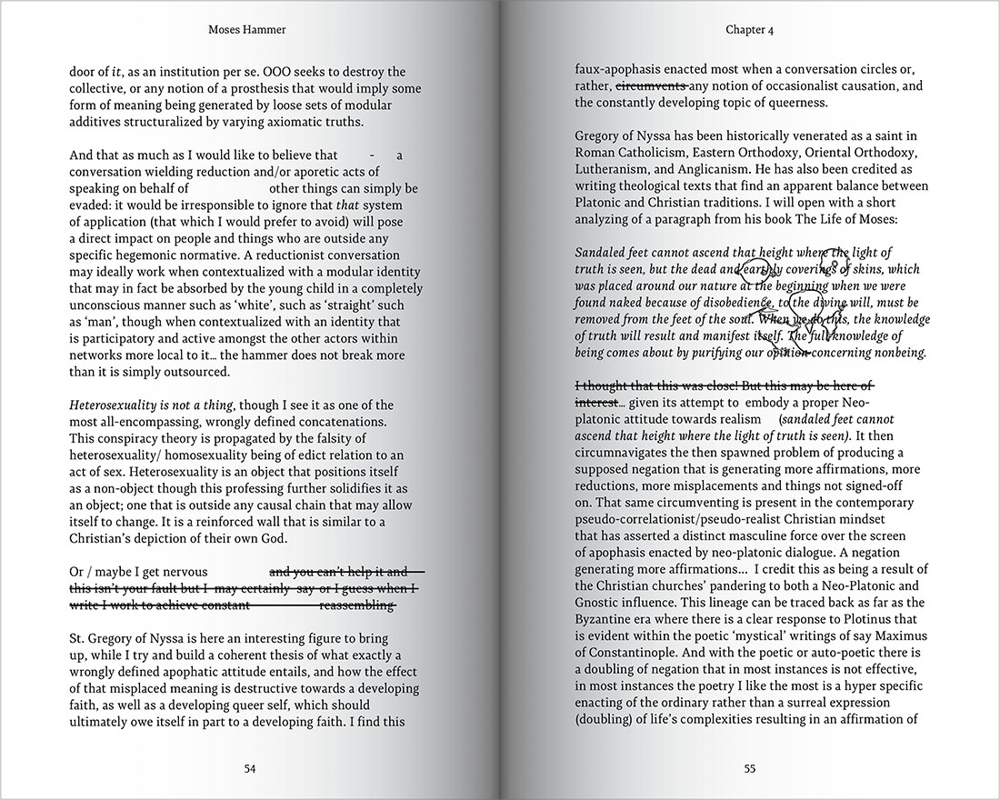
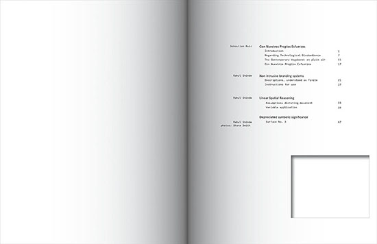
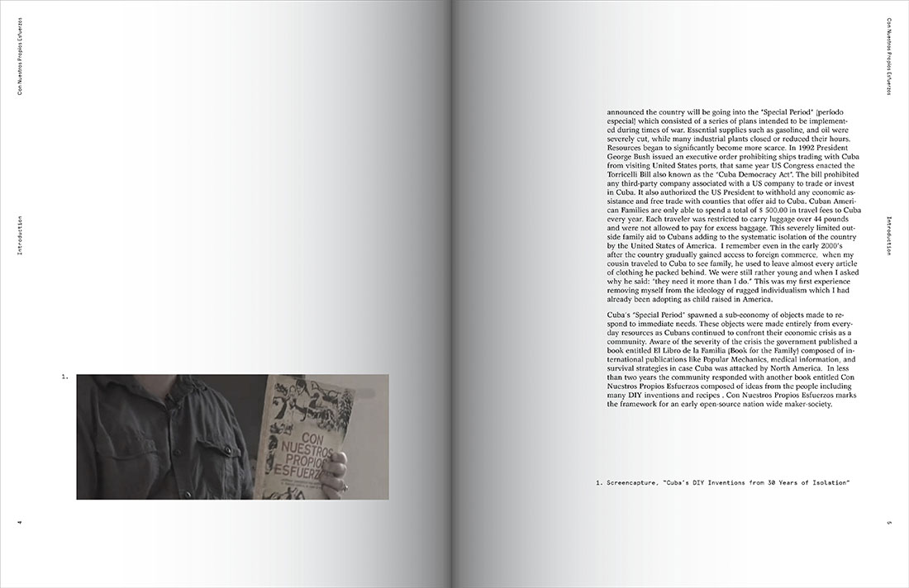
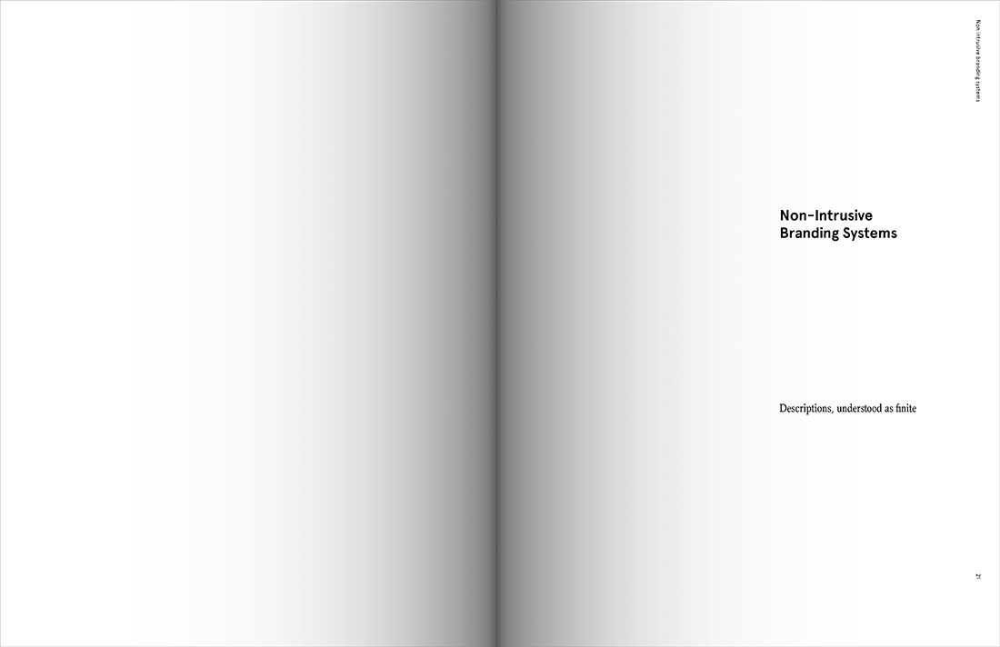
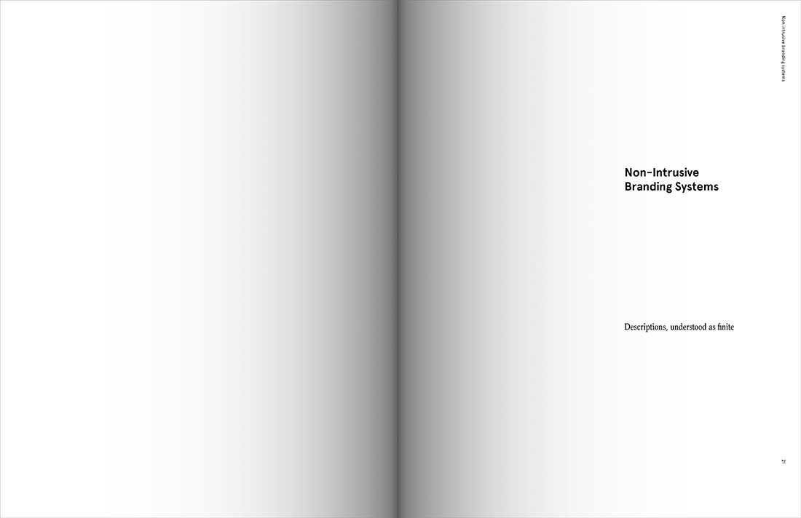

Publication Design
2015-2016
1. Moses Hammer
2016.04.12
In collaboration w/ Bailey Sheehan:
Moses Hammer initially came to into being as a response to a question: how can one actualize a negation without spawning an affirmation?
The book is available for purchase here.
a. External
b. internal (selected spreads)


 

2. Temporary Developments
2015.08.05
Temporary Developments serves as documention of the philosophy surrounding SOPH's non-intrusive branding systems. The publication contains both essays and a short story presenting both pragmatic solutions and abstracted vignettes of the future of such exploration.
The full pdf is available for download here.
a. External
b. Internal (Selected Spreads)
 
 
